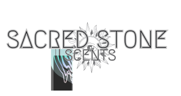

Inspirados en la sabiduría ancestral de las piedras sagradas, los rituales antiguos y la medicina sensorial de las plantas, nuestros blends nacen como portales olfativos hacia estados más profundos de presencia, protección y conexión espiritual.
Cada esencia es una fórmula vibracional creada con aceites esenciales puros, intención consciente y una estética ritual que honra tanto lo invisible como lo tangible. Aplicados sobre la piel, se convierten en una extensión de tu energía. Usados en tus rituales, despiertan memorias antiguas.
Sacred Stone Scents no es solo aroma.
Es presencia. Es tierra. Es misterio.
Lavanda · Cilantro · Ylang Ylang · Mejorana · Manzanilla Romana · Vetiver · Sándalo · Absoluto de Vainilla · Haba Tonka y más...
Un elixir de silencio y paz. Compañero en la oración, la sanación y la meditación.
Lavanda · Copaiba · Vainilla
Mezcla especial para los más pequeños. Un respiro de relajación, sintonía y protección para ellos.
Naranja Silvestre · Limón · Toronja, Bergamota, Mandarina Roja, Mandarina Verde, Lima, Litsea, Haba Tonka, Absoluto de Vainilla
Respira inspiración y ligereza. Una mezcla cítrica para levantar el ánimo y generar alegría.
Abeto Negro · Abeto Siberiano · Abeto Balsámico · Lavandin · Cedro · Ciprés · Incienso · Hinoki · Nootka · Cananga y más..
Reconecta con la magia del bosque y su armonía.
Laurel · Casia · Rosas
Aroma floral y profundo que te guía al centro de ti. Suerte líquida.
Incienso · Mirra · Jazmín
Un blend purificador que conecta con las energías más sutiles.
Árbol de la Vida · Menta · Geranio · Toronja
Destila quietud y sabiduría de las piedras. Respira la claridad.
Helicriso · Mirra · Petitgrain...
1.69 fl.oz 50ml
Manzanilla Romana · Blue tansy...
3.33 fl.oz 100ml
Cada blend de Sacred Stone Scents contiene en su interior pequeños cuarzos blancos, cuidadosamente elegidos y purificados.
El cuarzo blanco es un cristal de alta vibración conocido por su capacidad de amplificar la intención, elevar la energía y clarificar la mente.
Actúa como un canal puro: no dirige, no impone, simplemente sostiene y potencia lo que tú eliges sembrar.
Al reposar en el fondo de cada frasco, estos cristales guardan el espacio energético del blend, lo mantienen vibrante y alineado con su propósito esencial — ya sea calma, claridad, protección o introspección.
Un toque sutil. Una presencia constante. Una chispa de luz en cada gota.
COMPROMISO CON LA PUREZA
-
◈ Aceites Esenciales CPTG – (Certified Pure Tested Grade™)
◈ Mezclas botánicas en roll-on para aromaterapia consciente
◈ Aptos para uso tópico
◈ Aptos para masajes
◈ Aptos para uso terapéutico
Como parte de nuestro compromiso y convicción para trabajar sólo con la máxima calidad y pureza disponible, todos nuestros blends están hechos 100% con aceites esenciales certificados CPTG.
Así mismo el aceite portador de nuestros blends es 100% CPTG certificado, garantizando una experiencia segura, sensorial y profunda.

Los productos ofrecidos en Sacred Stone Scents están diseñados para uso personal y con fines aromáticos. No sustituyen asesoría médica ni tratamientos clínicos. No ingerir · Evitar el contacto con ojos y mucosas · Mantener fuera del alcance de niños y mascotas · Consulta con un profesional de la salud si estás embarazada, lactando o padeces alguna condición médica · Uso externo exclusivamente
Sacred Stone Scents no se hace responsable por el uso indebido de los productos o por reacciones adversas derivadas de una aplicación no recomendada.